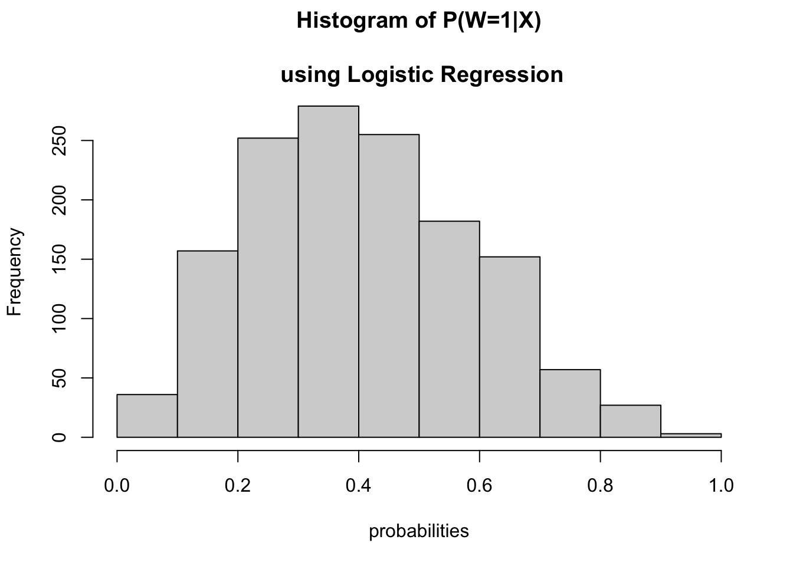

4.4 Estimation of propensity score
Propensity scores can be estimated using various statistical or machine learning models.
We will first estimate propensity score using a logistic regression model, where the treatment assignment \(W\) is regressed on the covariates \(X\).
Next, we will estimate propensity score using random forest model built within the GRF framework in Athey et al.
Logistic Regression
Using a linear regression framework to predict probabilities when the outcome is binary \(\{0, \; 1\}\) falls short since the predicted values can go beyond 0 and 1. Many models contain values within the range of 0 and 1, which can be used to model a binary response. The logistic regression uses a logistic function given as:
\[\begin{equation} p(X) = \frac{e^{\beta_0 + \beta_1 X_1 + \beta_2 X_2 + .... \beta_p X_p}}{1 + e^{\beta_0 + \beta_1 X_1 + \beta_2 X_2 + .... \beta_p X_p}} \tag{4.9} \end{equation}\]
It is easy to see that \(lim_{a \rightarrow - \inf}[\frac{e^a}{1+e^a}] = 0\) and \(lim_{a \rightarrow \inf}[\frac{e^a}{1+e^a}] = 1\). Equation @ref{eq:logit} can be transformed using the logit transformation given as:
\[\begin{equation} g(X) = ln[\frac{p(X)}{1-p(X)}] = \beta_0 + \beta_1 X_1 + \beta_2 X_2 + .... \beta_p X_p \end{equation}\]
We want to fit a logistic regression in order to predict the probability. For now, we will use simulated data.
# helper packages
library(dplyr) # data wrangling
library(ggplot2) # plots
library(rsample) # data splitting
library(tidyr) # for reshaping, pivot_wider
# Modeling package
library(caret) # for logistic regression modeling
# Model interpretability
library(vip)
set.seed(194) # for replicability
# Generate simulated Data
n <- 2000 # number of obsevations
p <- 10 # number of covariates
X <- matrix(rnorm(n * p), n, p) # data matrix
true_effect <- 2.5
W <- rbinom(n, 1, 0.1 + 0.4 * (X[, 1] > 0) + 0.2 * (X[, 2] > 0))
prob <- 0.1 + 0.4 * (X[, 1] > 0) + 0.2 * (X[, 2] > 0) # oracle propensity score
Y <- true_effect * W + X[, 2] + pmax(X[, 1], 0) + rnorm(n)
#plot(X[, 1], X[, 2], col = as.factor(W))
dat <- data.frame(cbind(W, Y, X))
colnames(dat) <- c("W", "Y", paste0("X", seq(1, 10)))
dat <- dat %>%
mutate(W = as.factor(W))
# create 70% training and 30% test data
churn_split <- initial_split(dat, prop = 0.7)
dat_train <- training(churn_split)
dat_test <- testing(churn_split)
# dimension of training and testing data
print(dim(dat_train))## [1] 1400 12print(dim(dat_test))## [1] 600 12# let's compare two different models
# using X1 as the predictor
cv_model1 <- train(
W ~ X1 + X2 + X3 + X4,
data = dat_train,
method = "glm",
family = "binomial",
trControl = trainControl(method = "cv", number = 10)
)
# misses out on X1
cv_model2 <- train(
W ~ X2 + X3 + X4,
data = dat_train,
method = "glm",
family = "binomial",
trControl = trainControl(method = "cv", number = 10)
)
# print the sample performance measures
sum_performance <- summary(
resamples(
list(
model1 <- cv_model1,
model2 <- cv_model2
)
)
)
sum_performance$statistics$Accuracy## Min. 1st Qu. Median Mean 3rd Qu. Max. NA's
## Model1 0.6043165 0.6446429 0.6678571 0.6706292 0.6964286 0.7285714 0
## Model2 0.5642857 0.5785714 0.5892392 0.5935621 0.6160714 0.6285714 0# use the confusion matrix
# predict class
threshold <- 0.5
pred_prob <- predict(cv_model1, dat_train, type = "prob")
pred_class_manual <- rep(0, 1400)
pred_class_manual[pred_prob[, 2] >= 0.5] <- 1
pred_class <- predict(cv_model1, dat_train)
# print the confusion matrix
confusionMatrix(
data = relevel(pred_class, ref = "1"), # predictions
reference = relevel(dat_train$W, ref = "1") # reference or the true value
)## Confusion Matrix and Statistics
##
## Reference
## Prediction 1 0
## 1 270 151
## 0 299 680
##
## Accuracy : 0.6786
## 95% CI : (0.6534, 0.703)
## No Information Rate : 0.5936
## P-Value [Acc > NIR] : 3.164e-11
##
## Kappa : 0.3053
##
## Mcnemar's Test P-Value : 4.219e-12
##
## Sensitivity : 0.4745
## Specificity : 0.8183
## Pos Pred Value : 0.6413
## Neg Pred Value : 0.6946
## Prevalence : 0.4064
## Detection Rate : 0.1929
## Detection Prevalence : 0.3007
## Balanced Accuracy : 0.6464
##
## 'Positive' Class : 1
## # if predict all yes still get an accuracy of 0.5936
table(dat_train$W) %>% prop.table()##
## 0 1
## 0.5935714 0.4064286Looking at the confusion matrix, the values on the downward diagonal ([1, 1] and [2, 2] in matrix) are correctly idenfified by the model, while the upward diagonal values ([2, 1] and [1, 2]) are incorrectly classified. If all of the observations were assigned the value of 0, the accuracy would still be 0.5936%. This is termed as the no information rate. The model performs quite well in predicting True Negatives (classify as 0, when the value is actually 0). However, it does not perform so well in classifying the True Positives – more than 50% of the positive cases are classified as negative.
Next, two measures of importance are sensitivity and specificity. The sensitivity measure tracks the true positive rate from the model, while the specificity measure tracks the true negative rate.
\(sensitivity = \frac{True \; positives}{True \; positives + False \; negatives} = 0.8790\).
\(specificity = \frac{True \; negatives}{True \; negatives \; + \; False \; positives} = \frac{604}{604 + 85} = 0.8766\).
How are the observations classified? A threshold value is used to transform the raw prediction of probabilities into classification such that \(P(Y_{i} > p_{threshold})=1.\) The implicit \(p_{threshold}\) used is 0.5. Varying the threshold from 0 to 1, one can calculate the relationship between the False Positive Rate (the prediction is positive when in actual the outcome is negative) and True Positive Rate at each threshold value. If the threshold value \((p_{threshold})\) is 1, then all observations are classified as 0, which means that the False Positive Rate is 0 but so is the True Positive Rate. Similarly, if the threshold is 0, then both True and False positive rates are 1. This gives the Receiver Operating Characteristic (ROC).
library(ROCR)
# compute probabilities
m1_prob <- predict(cv_model1, dat_train, type = "prob")[, 2]
m2_prob <- predict(cv_model2, dat_train, type = "prob")[, 2]
# AUC metrics
perf1 <- prediction(m1_prob, dat_train$W) %>%
performance(measure = "tpr", x.measure = "fpr")
perf2 <- prediction(m2_prob, dat_train$W) %>%
performance(measure = "tpr", x.measure = "fpr")
# plot ROC curves
plot(perf1, col = "red")
plot(perf2, add = TRUE, col = "green")
legend(0.8, 0.2, legend = c("cv_model1", "cv_model2"), lty = c(1,1),
col = c("red", "green"), cex = 0.6)Figure 4.1: ROC
The figure above plots the ROC for two models that we tested using cross-validation. The cv_model2 produces a diagonal line, which means that this model is as good as a random guess. Next, cv_model1 performs a whole lot better since a large gains in True positive rate can be achieved with a relatively small increase in False positive rate at the start. The ROC curve pertaining to cv_model1 helps pick a threshold to balance the sensitivity (True Positive Rate) and specificity (1 - False Positive Rate).
The histogram of the estimated propensity scores using the logistic regression is as:
hist(pred_prob[, 2], main = "Histogram of P(W=1|X)
\n using Logistic Regression", xlab = "probabilities")
Now, let’s take a look at the confusion matrix using the test data.
pred_class_test <- predict(cv_model1, dat_test)
# print the confusion matrix this time for the test sample
confusionMatrix(
data = relevel(pred_class_test, ref = "1"), # classification from the prediction
reference = relevel(dat_test$W, ref = "1") # ground truth
)## Confusion Matrix and Statistics
##
## Reference
## Prediction 1 0
## 1 94 69
## 0 131 306
##
## Accuracy : 0.6667
## 95% CI : (0.6274, 0.7043)
## No Information Rate : 0.625
## P-Value [Acc > NIR] : 0.01882
##
## Kappa : 0.2474
##
## Mcnemar's Test P-Value : 1.608e-05
##
## Sensitivity : 0.4178
## Specificity : 0.8160
## Pos Pred Value : 0.5767
## Neg Pred Value : 0.7002
## Prevalence : 0.3750
## Detection Rate : 0.1567
## Detection Prevalence : 0.2717
## Balanced Accuracy : 0.6169
##
## 'Positive' Class : 1
## The measures of accuracy, sensitivity, and specificity are similar for both the training and testing sample.